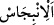
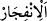
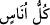
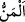
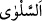

Mûsâ (a.s.)’ın asâsını vurduğu “taştan”, torun kabileler adedince olmak üzere “on
iki pınar fışkırdı.” yarıldı ve açıldı.
Haddâdî demiştir ki: “__WORD__” (fışkırmak), suyun azar azar çıkmasıdır. “__WORD__” ise
suyun bolca akmasıdır. Bu ayette “inbicâs” kelimesi kullanılmıştır. Çünkü su,
başlangıçta taştan azar azar çıkıyor, sonra çoğalıyordu. Böylece suda hem “incibâs”
hem de “inficâr” sıfatları toplanmış oldu.
“Her kabile içeceği yeri bildi.” Burada onların nüfus bakımından çokluğunu
bildirmek üzere “her kabile” yerine “__WORD__” (bütün insanlar) ifadesi kullanılmıştır.
Aralarında bulunan ırkçılık illeti yüzünden her kabile, kendine ait pınardan içer,
başkalarını ona karıştırmazdı.
Şeyhzâde der ki: Mûsâ (a.s.)’ın asâsını vurduğu taşta on iki çukur vardı.
İsrâiloğulları bir yerde konakladıkları zaman, beraberlerinde getirdikleri bu taşı belli
bir noktaya koyarlardı. Sonra her kabile kendine ait pınara gelerek oradan kendi
kabilesinin bulunduğu yere bir kanal açar böylece suyun onların yakınına akmasını
sağlardı. İşte Allah Teâlâ’nın: “Her kabile içeceği yeri bildi.” sözünün mânâsı budur.
Ayrıca “üzerlerine bulutla gölge yaptık” Bu bulut, Tîh çölünde İsrâiloğulları ile
birlikte yürür, onlar durunca da dururdu. Böylece onları gölgelendirir ve güneşin
sıcağından korurdu. Geceleyin ise gökten önlerine bir ateş parçası iner, onun ışığında
yürürlerdi.
“Ve onlara kudret helvasıyla bıldırcın eti indirdik:”
Kamûs’ta denilmiştir ki: “__WORD__” (kudret helvâsı), gökten taşların veya ağaçların
üzerine yağıp tatlılaşan ve bal haline dönüşerek zamk gibi kuruyan çiğden oluşan bir
yiyecektir.
Kazvînî ve İbnü’l-Baytar, “__WORD__”nın bıldırcın olduğunu, başkaları ise bıldırcına
yakın bir kuş olduğunu söylemiştir.
Farsça tefsirde şöyle denilmektedir: Bu, bıldırcın şeklinde bir kuştur. Yemen
tarafında yaşar. Serçeden daha büyük, güvercinden biraz küçüktür.
Bıldırcın etinin “__WORD__” diye isimlendirilmesi, insan onu bulunca diğer katıkları
unuttuğu içindir. Bir hadiste şöyle buyurulmuştur: “Etlerin en güzeli kuş etidir.”[103]
Başka bir hadiste şöyle buyurulmuştur: “Dünyada ve ahirette katıkların en güzeli et,
içeceklerin en güzeli su ve kokuların en güzeli ise kına çiçeği kokusudur.”[104] Yine
etin yemeklerin efendisi olduğuna Peygamberimiz (s.a.v.)’in şu hadisi delâlet eder:
“Aişe’nin diğer kadınlara üstünlüğü, tiridin diğer yemeklere olan üstünlüğü
gibidir.”[105]
Denildiğine göre Tîh çölündeki Mûsâ kavmine, kişi başına bir sâ‘ olmak üzere tan
yerinin ağarmasından güneşin doğuşuna kadar kar gibi kudret helvası yağardı. Yanlarına
da bıldırcınlar gönderilir, herkes bunlardan kendilerine yetecek kadar kesip yerdi.
Onlara: “Size verdiğimiz güzel rızıklardan” kudret helvasının ve bıldırcın etinin